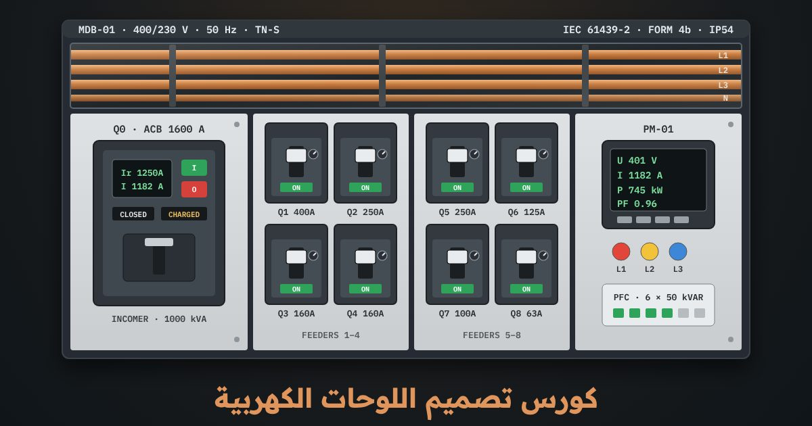

كورس · 12 درس · حاسبة مصمّم ومصمّم لوحاتبالعربية الفصحى
كورس تصميم اللوحات الكهربية
إزاي تحسب أحمال مصنع، وتختار القاطع والكابل والبار المناسب، وتتأكّد من هبوط الجهد وتيار القصر والانتقائية والتأريض، وبعدين ترتّب اللوحة وتحسب حرارتها وتسلّمها مختبَرة. الكورس مبني على IEC 60364 و IEC 61439 و IEC 60947 والكود المصري، ومشروعه لوحة توزيع رئيسية لمصنع من المحوّل لحد آخر مخرج.
الدرس الأول مفتوح للكل، والمحاكيين بيتفتحوا مع الكورس

المحتوى
12 درس بالترتيب، كل درس وراه تمرين على المحاكي
الدروس مكتوبة بالعربية الفصحى، والحسابات كلها مشروحة خطوة بخطوة بالأرقام. كل درس فيه أسئلة، وآخر درس فيه المشروع والامتحان النهائي.
- ما اللوحة الكهربية؟ الأنواع والمعاييرمفتوح للكل
- اللوحة الكهربية ومكانها في منظومة التوزيع
- مشروع الكورس: مصنع صغير
- المعيار IEC 61439: الأجزاء والمسؤوليات والمعدّلات
- المعدّلات التي تُكتب على لوحة البيانات
- التحقق من التصميم والاختبارات الروتينية
- التحقق الروتيني على كل لوحة قبل التسليم
- الكود المصري ومعايير الخليج، وأخطاء شائعة
- أسئلةأسئلة الدرس
- حساب الأحمال وتيار التصميم
- من القدرة المركّبة إلى الحمل الأقصى
- تيار التصميم Ib للأحمال ثلاثية الطور والمحركات
- الأحمال أحادية الطور وتوزيعها على الأطوار
- جدول أحمال المصنع والحمل الأقصى للوحة الرئيسية
- اختيار المحوّل والقاطع الرئيسي
- محاكياملأ جدول أحمال المصنع…
- أسئلةأسئلة الدرس
- اختيار القواطع
- أنواع القواطع ومعاييرها
- منحنيات B و C و D للقواطع المصغّرة
- القاطع الإلكتروني: ضبط Ir و Isd و Ii
- قدرة القطع Icu و Ics وتيار القصر في…
- قواطع مخارج المصنع
- محاكياختر نوع القاطع وإطاره لكل مخرج في المصنع،…
- أسئلةأسئلة الدرس
- اختيار مقطع الكابل
- الشرط الأساسي: Ib ≤ In ≤ Iz
- طرق التمديد ونوع العزل
- معاملات التصحيح: الحرارة والتجميع والتوافقيات
- جدول السعة واختيار أصغر مقطع
- كابلات مغذّيات المصنع
- محاكياختر لكل مخرج نوع الموصل والعزل وطريقة التمديد…
- أسئلةأسئلة الدرس
- هبوط الجهد وتيار القصر
- لماذا نحسب هبوط الجهد؟ وما حدوده؟
- حساب هبوط الجهد خطوة بخطوة
- مثال المشروع: من المحوّل حتى ضاغط 37 kW
- مثال الإنارة: الحد 3 % يفرض تعديل الدائرة
- تيار القصر عند كل لوحة
- تحمّل الكابل الحراري: k²S² ≥ I²t
- مثال 1: قاطع بتأخير زمني
- مثال 2: قاطع محدِّد للتيار وزمن أقل من…
- أخطاء شائعة وكيف تتحقق
- محاكيأدخل أطوال الكابلات واحسب هبوط الجهد لكل مغذٍّ…
- أسئلةأسئلة الدرس
- البارات النحاسية
- البارات في اللوحة: الأجزاء والمواد
- مقطع البار حسب التيار والحرارة
- مثال المشروع
- بارات التوزيع ومعامل التباين المقنّن RDF
- قوى القصر على البارات والدعامات
- المسافات والعزل والوصلات
- بار المحايد وبار الحماية وأخطاء شائعة
- محاكياختر بار الـ MDB الرئيسي حسب التيار وحرارة…
- أسئلةأسئلة الدرس
- التنسيق والانتقائية بين الحمايات
- ما الانتقائية؟ ولماذا تهمّ المصنع؟
- قراءة منحنى الزمن والتيار
- ضبط المستويات الثلاثة في المشروع
- الفحص
- التسلسل Cascading: حماية احتياطية
- أخطاء شائعة وكيف تتحقق
- محاكيحرّك ضبط Ir و Isd و tsd و…
- أسئلةأسئلة الدرس
- التأريض والحماية من الصعق
- أنظمة التأريض: TN و TT و IT
- زمن الفصل ومعاوقة حلقة العطل
- مثال المشروع: دائرة مضخة 15 kW من الـ…
- موصل الحماية PE وموصلات الربط
- قواطع التيار المتبقي RCD
- التأريض داخل اللوحة وأخطاء شائعة
- محاكياختر نظام التأريض وشاهد مسار تيار العطل في…
- أسئلةأسئلة الدرس
- تحسين معامل القدرة
- لماذا نحسّن معامل القدرة؟
- حساب قدرة المكثفات kVAR
- البنك الآلي: الخطوات والمنظّم
- التوافقيات والملفات المانعة (Detuned reactors)
- حماية البنك وكابله، والأخطاء الشائعة
- محاكيستحسب قدرة البنك من cos φ 0.78 إلى…
- أسئلةأسئلة الدرس
- ترتيب اللوحة والحرارة داخلها
- اختيار الغلاف ودرجة الحماية IP
- أشكال الفصل الداخلي Forms (IEC 61439-2)
- ترتيب المكونات ومجاري الأسلاك
- حساب ارتفاع الحرارة داخل اللوحة
- التهوية والتبريد، والأخطاء الشائعة
- محاكيسترتب لوحة توزيع الإنارة على اللوح والقضبان مع…
- أسئلةأسئلة الدرس
- لوحات المحركات MCC
- ما لوحة MCC؟ ومخارج المصنع
- البدء المباشر DOL وستار دلتا
- البادئ الناعم ومحوّل التردد VFD
- تنسيق Type 1 و Type 2 وجدول المكونات
- حرارة حجرة المحوّل، والفحص قبل التسليم
- محاكيستبني أربعة مخارج MCC في حجرات Form 4b:…
- أسئلةأسئلة الدرس
- المشروع: لوحة توزيع رئيسية + الاختبارات والامتحان
- من المخطط الأحادي إلى قائمة المكونات
- القيم المقننة للوحة ولوحة بياناتها
- الترتيب متعدد الأقسام والحرارة
- التحقق التصميمي والاختبارات الروتينية (IEC 61439)
- التسليم والأخطاء الشائعة
- محاكيستصمّم اللوحة الرئيسية كاملة من المخطط الأحادي…
- أسئلةأسئلة الدرس
- امتحانالامتحان النهائي
الكورس بالأرقام
12درس من أول حساب الأحمال لحد لوحة توزيع رئيسية كاملة
11تمرين على حاسبة المصمّم ومصمّم اللوحات
2محاكي: حاسبة بمخطط أحادي الخط ومصمّم لوحات بالمقاسات الحقيقية
80%للنجاح في الامتحان النهائي وشهادة إتمام
تصميم اللوحات
إنت هتتعلّم إيه
- تفرق بين لوحات التوزيع الرئيسية والفرعية ولوحات المحركات وتحسين معامل القدرة والتحويل التلقائي، وتعرف متطلبات IEC 61439
- تحسب الأحمال بمعامل الطلب ومعامل التباين، وتطلع تيار التصميم Ib لكل مخرج وللوحة كلها
- تختار القاطع المناسب MCB أو MCCB أو ACB، وتضبط Ir و Isd و Ii، وتتأكّد من قدرة القطع Icu و Ics
- تختار مقطع الكابل بمعاملات التصحيح وشرط Ib ≤ In ≤ Iz
- تحسب هبوط الجهد وتيار القصر عند كل نقطة، وتفحص تحمّل الكابل الحراري
- تصمّم البارات النحاسية والبار الأرضي والمحايد، وتحسب قوى القصر على الدعامات
- تعمل انتقائية بين الحمايات على منحنيات الزمن والتيار، وتستخدم التسلسل Cascading صح
- تختار نظام التأريض TN أو TT أو IT ومقطع موصل الحماية PE وقواطع RCD
- تحسب بنك المكثفات بالـ kVAR وخطواته وحمايته
- ترتّب اللوحة وتختار شكل الفصل Form ودرجة الحماية IP وتحسب ارتفاع الحرارة، وتصمّم مخارج MCC بتنسيق Type 2
المحاكيات
حاسبة مصمّم اللوحات ومصمّم اللوحات الكهربية: 11 تمرين
مخطط أحادي الخط لمصنع كامل تحسب عليه كل حاجة، ومصمّم ترتّب فيه اللوحة بالمقاسات الحقيقية. كل تمرين مرتبط بدرس، وإتمامه بيتسجّل في تقدّمك.
- حساب الأحمالمصنع صغير: اجمع القدرة المركّبة، وطبّق معامل الطلب ومعامل التباين، واحسب تيار التصميم Ib لكل مخرج وللوحة كلها
- اختيار القواطعاختار MCB أو MCCB أو ACB لكل مخرج، واضبط Ir و Isd و Ii، وتأكّد إن قدرة القطع Icu أكبر من تيار القصر عند اللوحة
- مقاطع الكابلاتطبّق معاملات الحرارة والتجميع وطريقة التمديد، واختار أصغر مقطع يحقّق Ib ≤ In ≤ Iz
- هبوط الجهد وتيار القصراحسب هبوط الجهد لحد آخر حمل وتيار القصر عند كل لوحة، وكبّر الكابل لو الهبوط برّه الحد أو الكابل ما يستحملش k²S² ≥ I²t
- البارات النحاسيةاختار مقطع البار حسب التيار والحرارة، وافحص قوى القصر والمسافة بين الدعامات والبار الأرضي والمحايد
- الانتقائيةحرّك منحنيات القواطع على رسم الزمن والتيار لحد ما القاطع الأقرب للعطل هو اللي يفصل لوحده
- التأريض والحماية من الصعقاختار نظام التأريض ومقطع موصل الحماية PE والـ RCD المناسب، وتأكّد إن زمن الفصل جوّه الحد
- بنك المكثفاتاحسب قدرة المكثفات kVAR لتحسين معامل القدرة، وقسّمها على خطوات، واختار الملفات المانعة للتوافقيات وحماية البنك
- ترتيب اللوحة وحرارتهااختار الخزانة ورتّب المكونات بالمقاسات الحقيقية وشكل الفصل ودرجة الحماية IP، واحسب ارتفاع الحرارة والتهوية
- مخارج MCCصمّم مخارج DOL وستار دلتا وبادئ ناعم ومحوّل بتنسيق Type 2، واختار القاطع والكونتاكتور والأوفرلود لكل مخرج
- مشروع لوحة التوزيع الرئيسيةصمّم لوحة التوزيع الرئيسية للمصنع كاملة من الحساب للترتيب، وسلّمها بعد اختبارات التسليم
لمين
مين الكورس ده ليه
- لمهندسين الكهربا اللي بيصمّموا أو بيراجعوا لوحات توزيع ولوحات محركات
- لفنيين ومشرفين تصنيع اللوحات اللي عايزين يفهموا الحسابات ورا كل اختيار
- لمهندسين وفنيين الصيانة اللي عايزين يعرفوا ليه القاطع بيفصل وإمتى الكابل بيسخن
- بعد كورس أساسيات الكهربا والكلاسيك كنترول، والحسابات كلها مشروحة بالأرقام
أسئلة بتتكرر
قبل ما تسأل
محتاج برنامج تصميم أو كتالوجات؟
لا. كل التمارين على المحاكيين في المتصفح، من الموبايل أو الكمبيوتر، والجداول اللي محتاجها موجودة جوه الدروس. ولما تيجي تصمّم لوحة حقيقية هتلاقي نفس الخطوات ونفس المصطلحات اللي في المعايير والكتالوجات.
ليه الكورس بالفصحى؟
عشان المصطلحات الفنية تبقى دقيقة وتنفع في أي بلد عربي، والأسماء والمعايير زي ما هي في المواصفات الرسمية.
بيغطي معايير إيه؟
IEC 60364 للتركيبات، و IEC 61439 للوحات، و IEC 60947 للقواطع، و IEC 60909 لتيار القصر، و IEC TR 60890 لحرارة اللوحة، مع الكود المصري لأسس تصميم التركيبات الكهربية.
محتاج حساب؟
الدرس الأول مفتوح للكل. باقي الدروس والمحاكيين والشهادة بيتفتحوا لما تشتري الكورس، وتقدّمك بيتحفظ على حسابك.
فيه شهادة؟
آه، شهادة إتمام من LearnElectricals لما تخلّص الدروس والتمارين وتنجح في الامتحان النهائي بـ 80%.
جاهز تصمّم أول لوحة؟
الدرس الأول مفتوح للكل، والكورس كله بالمحاكيين بيتفتح لما تشتريه. ادخل دلوقتي وكمّل على راحتك، وتقدّمك بيتحفظ.